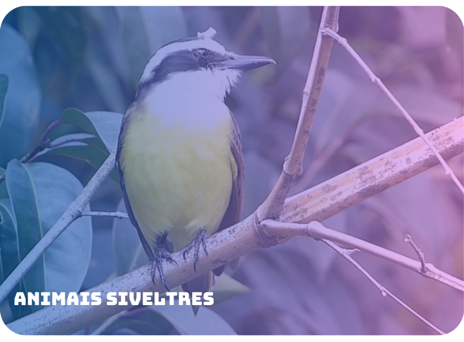
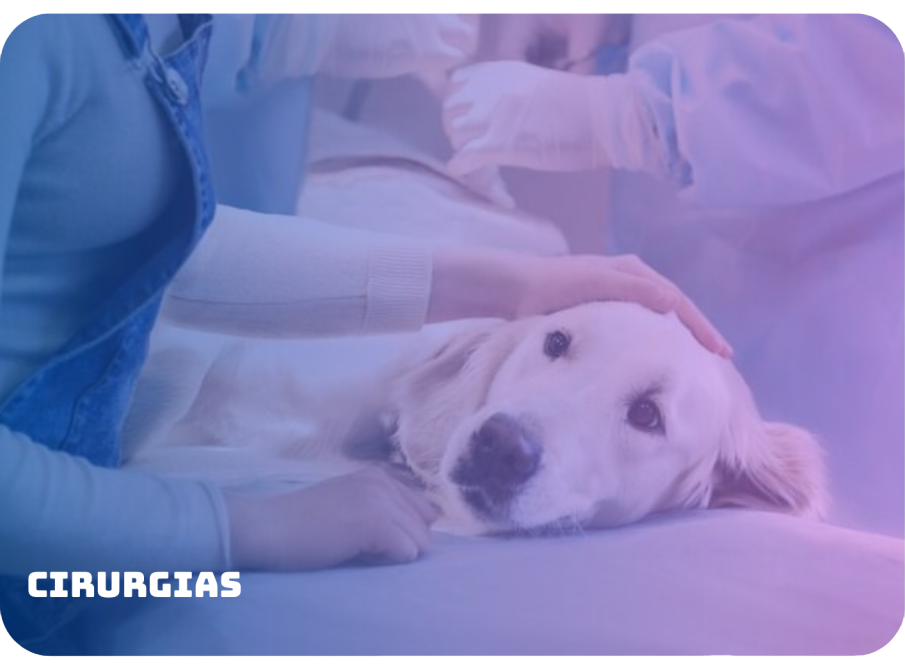
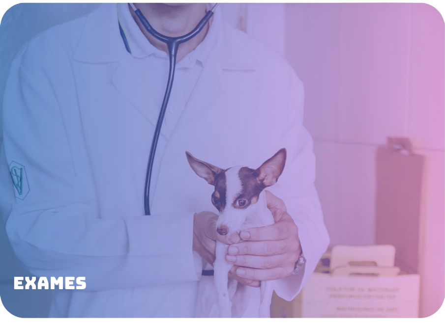
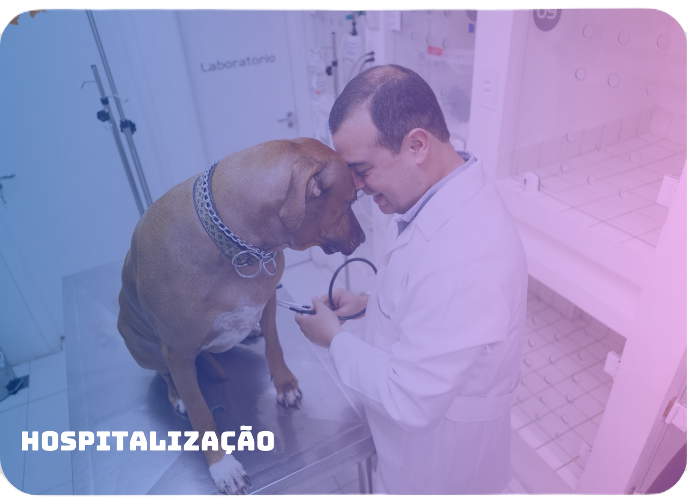
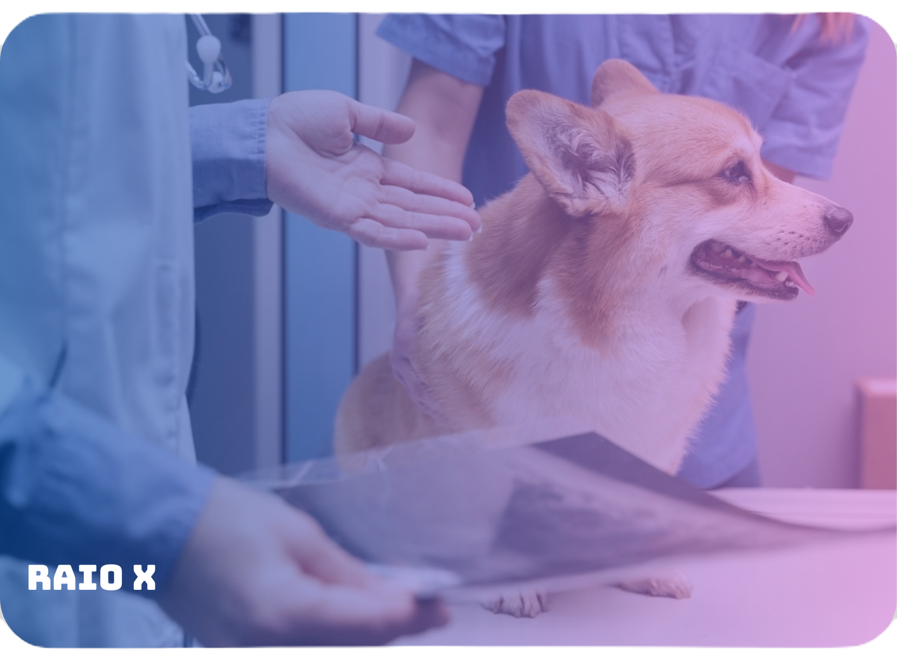
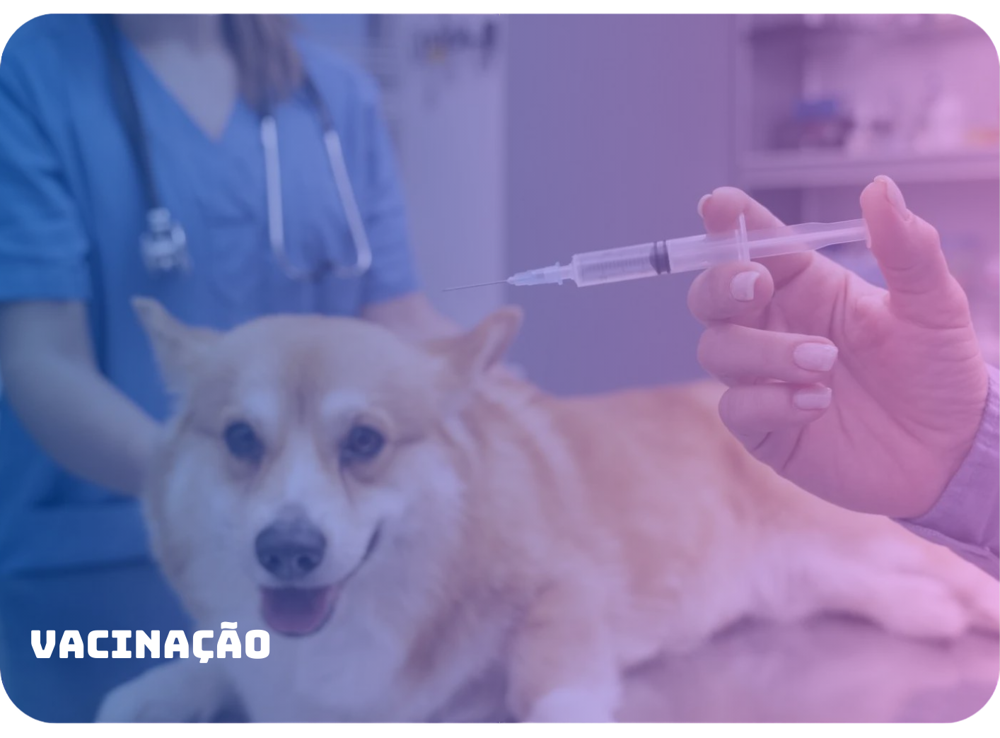

Perguntas frequentes
O que é a Pet.Net?
É uma das maiores redes clínicas veterinárias da região de Campinas , tendo profissionais excelentes e atendimentos todos os dias da semana, e em caso de emergência todos os dias aberto 24Hrs, é a única clínica de veterinária com um sistema leva e trás do seu pet, facilitando a acessibilidade para você!!!. E temos desconto 15% para pessoas de mais de 60 anos.
Quais cidades da região nós atendemos?
As cidades que atendemos:
- • Campinas - SP
- • Americana - SP
- • Limeira - SP
- • Sumaré - SP
- • Santa Bárbara D'Oeste - SP
- • Piracicaba - SP
Quais são os nossos serviços?
Nosso diferencial:
Buscamos os pets diretamente nas casas dos clientes.Banho e Tosa:
Atendemos animais de pequeno até grande porte. Trabalhamos com produtos de qualidade para o atendimento do seu melhor amigo.Vacinação:
Oferecemos as melhores vacinas do mercado para proteger o seu pet contra doenças. Vacinamos cachorros, gatos, coelhos e outros animais.Consultas Médicas:
Possuimos profissionais qualificados, prontos 24 horas por dia para cuidar do bem estar do seu Pet. Temos atendimento online para dúvidas comuns.Cirurgias:
Temos os melhores e mais qualificados especialistas para realizar cirurgias. Trabalhamos com equipamentos de qualidade, trazendo a segurança necessária na realização de todos os procedimentos.





